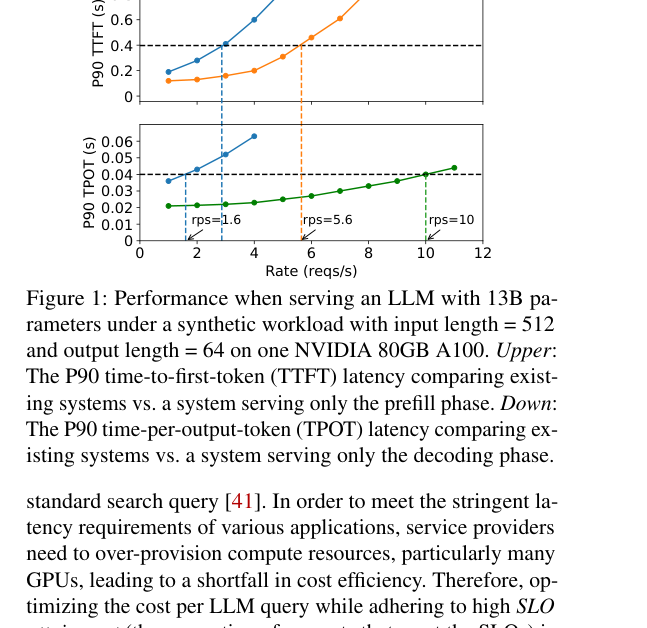
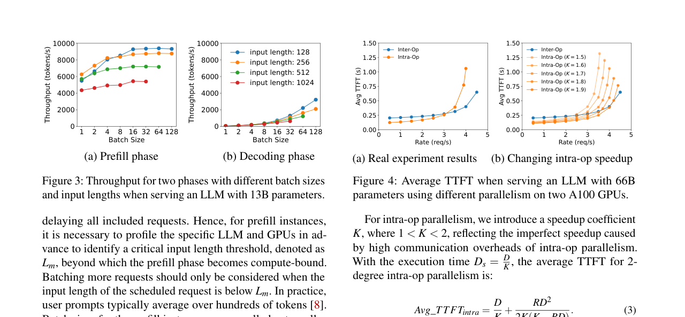
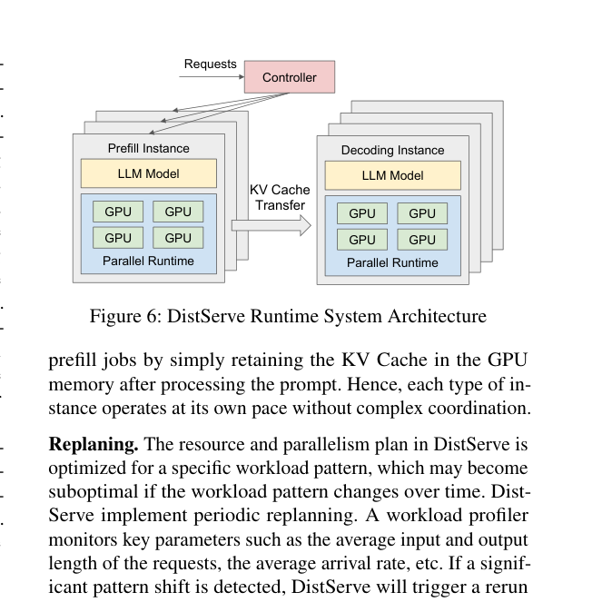

DistServe：解耦 Prefill 与 Decoding 的 Goodput 优化 LLM 服务：中文精读与校订
这篇论文做什么？
把计算密集的 prefill 与带宽密集的 decode 放到不同 GPU 池，分别选择并行度和副本数，再以 TTFT/TPOT 双 SLO 下的 per-GPU goodput 为目标做资源规划。
- 问题：共置执行会产生 prefill/decode 干扰，并把两个阶段的并行与扩容策略错误地绑在一起。
- 方法：P/D 实例解耦、KV 传输、阶段专属并行策略与带宽感知放置。
- 结果：可服务请求率最高提高 7.4×，或在相同负载下提供 12.6× 更紧的 SLO。
校订说明：本页按原论文的论证顺序重写术语与因果关系；图均裁自论文原图，数据结论保留论文适用条件，不把峰值结果泛化为固定加速。
摘要。DistServe 通过解耦 prefill 和 decoding 计算来改善 LLM 服务性能。现有系统将两个阶段共置（colocate）并跨所有用户和请求批量处理。论文发现这种策略不仅导致强烈的 prefill-decoding 干扰，还耦合了两阶段的资源分配和并行方案。LLM 应用通常关注各阶段的单独延迟：prefill 阶段的 TTFT（time to first token）和 decoding 阶段的 TPOT（time per output token）。DistServe 将 prefill 和 decoding 分配到不同 GPU，消除干扰，并针对每个阶段协同优化资源分配和并行策略，同时根据集群带宽优化两阶段的物理放置以最小化解耦带来的通信开销。评估表明，DistServe 相比 SOTA 可服务 7.4 倍更多请求或实现 12.6 倍更紧的 SLO。
1 引言
LLM 服务的延迟由两个指标衡量：TTFT（首 token 延迟，即 prefill 阶段时长）和 TPOT（每输出 token 平均时间，即 decoding 阶段指标）。不同应用对两者的侧重不同：实时聊天机器人优先低 TTFT，文档摘要优先低 TPOT。有效的服务系统应在满足 TTFT 和 TPOT 约束的前提下最大化每 GPU goodput——即满足 SLO 达标率（如 90%）的最大请求速率。
现有系统将 prefill 和 decoding 共置在 GPU 上，通过连续批处理（continuous batching）跨请求合并两阶段计算以最大化总吞吐量。但这种共置存在两个根本问题。
1.1 Prefill-Decoding 干扰
一个 prefill 步骤通常远长于 decoding 步骤。当两者被批量处理在一起时，decoding 步骤被 prefill 步骤拖延，显著延长 TPOT；反之，decoding 步骤的加入也增加了 TTFT。即使分开调度，两阶段仍竞争资源：等待执行的 decoding 任务因进行中的 prefill 任务而排队延迟增加，反之亦然。优先调度某一阶段则可能违反另一阶段的延迟要求。实验显示，在 13B 模型上，单独运行 prefill 可达 5.6 rps/GPU，单独运行 decoding 可达 10 rps/GPU，但共置仅 1.6 rps/GPU。
1.2 资源分配耦合
Prefill 和 decoding 对并行策略有不同偏好。Prefill 是计算密集型，适合 intra-operator 并行（张量并行）来减少执行时间；decoding 是内存带宽密集型，适合 inter-operator 并行（流水线并行）来扩展速率容量。共置两阶段则耦合了资源分配，无法为各阶段实施最适合的并行策略。
2 解耦架构
DistServe 将 prefill 和 decoding 分配到不同 GPU，各自独立运行。这带来两个好处：消除 prefill-decoding 干扰；允许各阶段独立扩展，采用量身定制的资源分配和模型并行策略。
解耦的代价是两阶段之间需要传输中间状态（KV cache）。但论文论证，在现代 GPU 集群中这一通信开销不大——Prefill 和 decoding 实例之间通过 RDMA/NCCL 传输 KV cache，在 A100 的 400 Gbps 带宽下，传输 512 token 的 KV cache 仅需几毫秒，相对于 prefill 本身的执行时间可以忽略。
3 Goodput 优化
3.1 单实例优化
给定应用的 TTFT 和 TPOT 要求，DistServe 首先为单个模型副本协同优化 GPU 分配和并行策略。Prefill 实例优先选择张量并行以降低 TTFT；decoding 实例可选择流水线并行以线性扩展速率容量。优化目标是在满足 SLO 的前提下最大化每 GPU goodput。两个阶段可能获得不同的 GPU 数量和并行配置。
3.2 多实例扩展
单实例优化后，DistServe 通过复制（replication）扩展到多个实例，直到满足用户要求的总流量速率。放置算法根据集群带宽拓扑选择最优的 prefill 和 decoding 实例位置，最小化跨阶段通信延迟。
4 Prefill-Decoding 干扰的量化
论文用实验量化了干扰的严重性。在已有 decoding 请求的 batch 中加入一个 prefill 请求，TPOT 可增加 2-10 倍，具体取决于 prefill 长度。prefill 越长，干扰越严重。即使在 chunked-prefill 方案中将长 prefill 拆分为小块并 piggyback 到 decoding 上，也只能在 TTFT 和 TPOT 之间做权衡，无法消除干扰。
5 实现与实验
DistServe 作为编排层实现在 LLM 推理引擎之上。评估覆盖 chatbot、编程助手和文档摘要三类工作负载，使用 LLaMA-13B、LLaMA-70B 等模型。对比 vLLM 和 Sarathi-Serve。结果显示：DistServe 在各种延迟约束下可服务 7.4 倍更多请求，或实现 12.6 倍更紧的 SLO，同时保持 90% 以上请求在延迟约束内。改进来自消除干扰和独立优化的叠加效果。
6 局限与选题启发
DistServe 的解耦策略是静态的——prefill 和 decoding 实例的 GPU 分配在部署时确定，不随负载动态变化。在突发流量下，某一阶段可能成为瓶颈而另一阶段资源闲置。此外，跨阶段的 KV cache 传输虽然单次开销小，但在高 QPS 下累积带宽消耗不可忽视。后续工作如 Splitwise 进一步探索了异构硬件和集群级优化。
对本仓库方向的意义。DistServe 确立了 prefill-decoding 解耦这一重要设计范式。在 agentic workflow 场景下，一个 agent 的 prefill 可能是另一个 agent 的 decoding 输入，解耦后可以分别为各阶段优化调度策略。这为工作流级调度器（如 SAIL 的状态亲和插入、FATE 的未来状态感知）提供了底层资源管理的理论依据。
公式与目标函数
Goodput 不是裸吞吐：只有同时满足首 token 和逐 token 延迟目标的请求才算有效。DistServe 优化的是每张 GPU 能承载的合规到达率。
原论文图解



证据边界与校订结论
论文把离线 profiling、单实例并行方案搜索、多实例副本配置和集群放置串成规划器。需要注意：7.4× 是特定模型、工作负载和 SLO 组合下的最高 goodput 改善，而不是所有场景的固定加速；当网络不足以隐藏 KV 传输时，解耦收益会被通信成本侵蚀。
参考说明
参考文献保留在原 PDF 中。本文译稿覆盖摘要、干扰问题、解耦架构、goodput 优化、干扰量化和实验结果。